01 / Why INAGE · なぜ稲毛なのか
計画なし。
ただ、東京を出たかった。
連休の午後、特に行き先も決めず錦糸町からJRに乗った。
人混みを避けたいのに、どうせなら海が見たい。
そう思ったとき、自然と頭に浮かんだのが千葉だった。
一時間もかからない。それだけで十分な理由だった。
02 / First stop ・ 食事
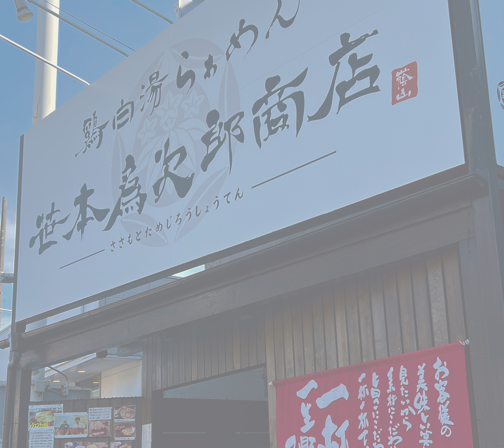
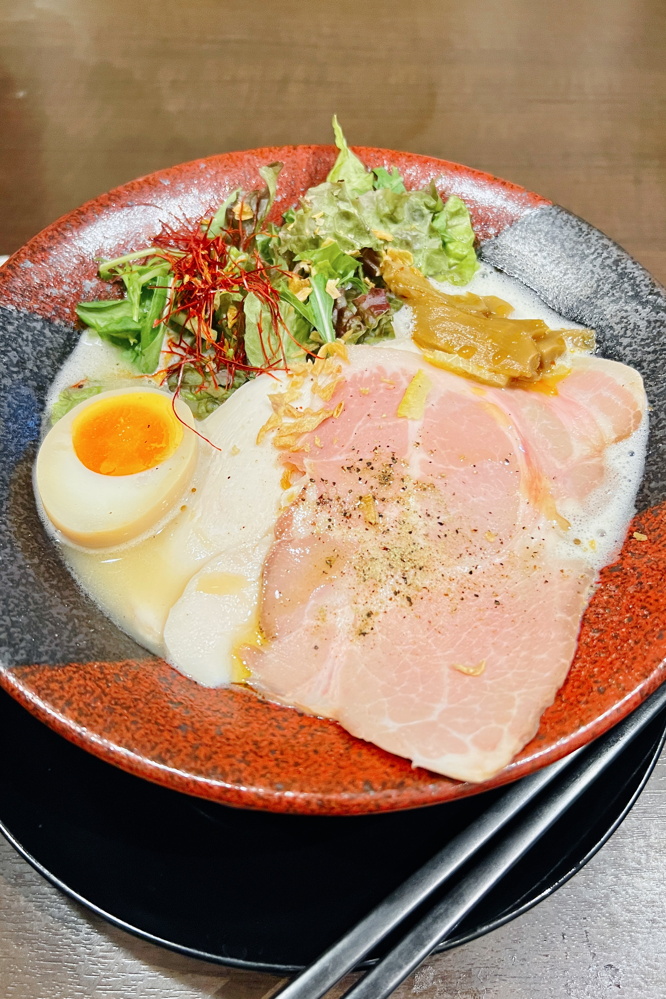
腹が減っては、
寄り道もできない。
稲毛駅を出てすぐ、Googleマップで評価の高いラーメン屋を見つけた。
鶏白湯らぁめん 笹本爲次郎商店。
鶏白湯が好きで、迷わず入った。
スープは濃厚で、麺との絡みがちょうどいい。
海を歩く前の、静かな一人の時間。
旅はこういう小さな選択の積み重ねでできている。
03 / To the Sea ・ 海へ
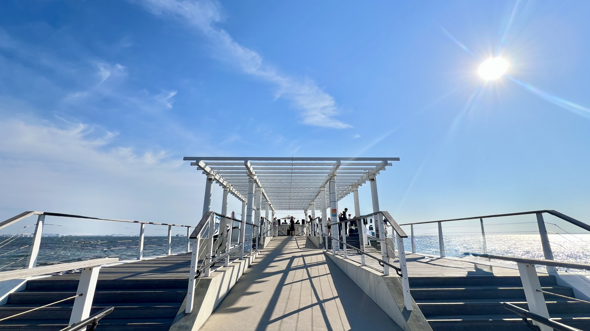
いなげの浜 ウッドデッキ
人混みを逃げて、人混みに着いた。
食後、自転車を借りて稲毛海浜公園へ向かった。
連休だから混んでいるとは思っていたけれど、ここまでとは思っていなかった。
人、人、人。思わず笑ってしまった。それでも、海は海だった。青い空と、陽光を反射してきらめく海面。
いなげの浜ウッドデッキのバーからの眺めは良かったけれど、人が多すぎてすぐに歩き出した。
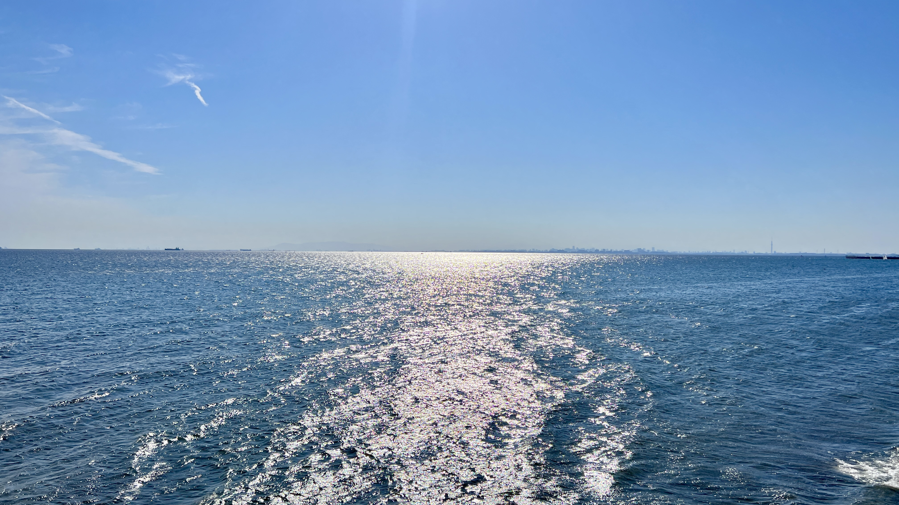
Impressive view from the Dock.
Everything is just so blue.
04 / The Walk ・ 歩く
少し酔って、
海沿いをひとりで歩いた。
幕張へ向かって歩き始めると、人が減っていった。
缶を一本買って、波の音を聞きながら歩く。
潮風と、じんわりした酔いと、日差しの熱さ。
こういう時間のために来たのだと思った。
途中、「Beach Scene」のモニュメントを見つけた。
検見川浜の中央突堤で少し休んだ。
空の色が、青からわずかに金色へと変わり始めていた。
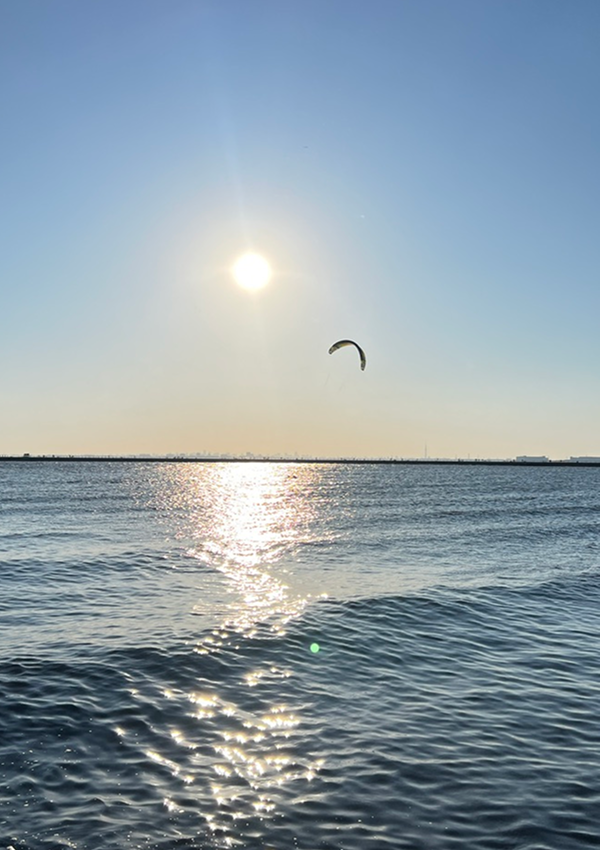
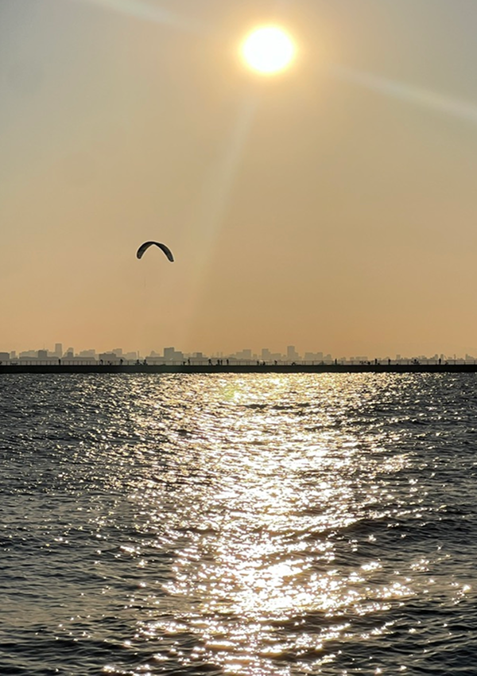
05 / Golden Hour ・ 夕暮れ
空が、溶けていった。
検見川浜の突堤に座って、ただ空を見ていた。
青が金になり、金がオレンジになり、やがて紫が滲んで、暗くなっていく。
富士山のシルエットと、スカイツリーの細い輪郭が地平線に浮かんでいた。
そのとき、「ドン」という音がした。振り返ると、ディズニーランドの花火が夕焼けの空に上がっていた。
予定にはなかったものが、一番の記憶になった。
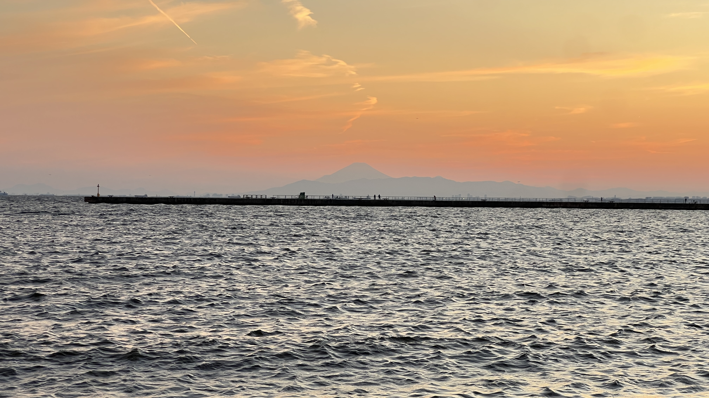
06 / Onsen ・ 温泉
汗を流して、
一日が終わった。
日が落ちてから、JFA夢フィールド幕張温泉 湯楽の里へ向かった。
半日歩き続けた体に、お湯がじんわり染みていく。
脱力して、目を閉じると、今日見たものが少しずつ整理されていった。
完璧な天気だった。
予定のない半日が、こんなに満たされた一日になるとは思っていなかった。
千葉に、ありがとう。
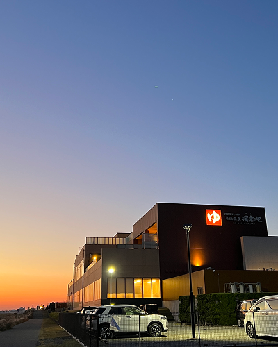
07 / About Inage ・ 稲毛について
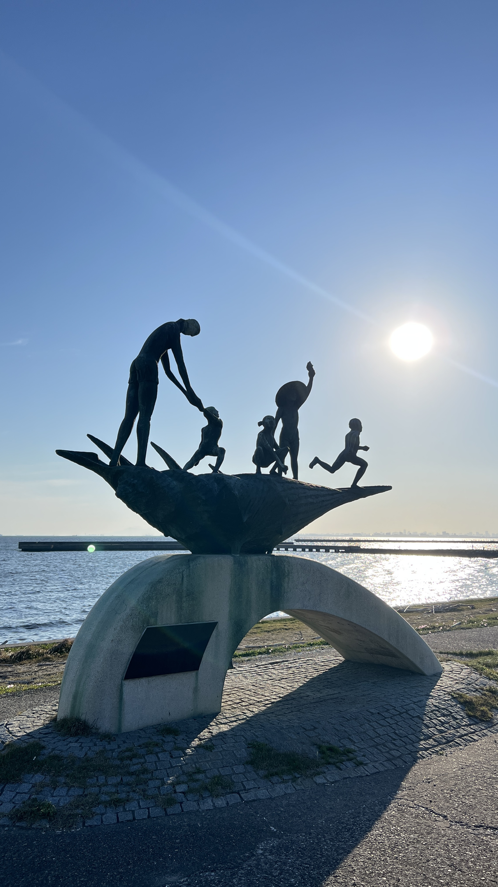
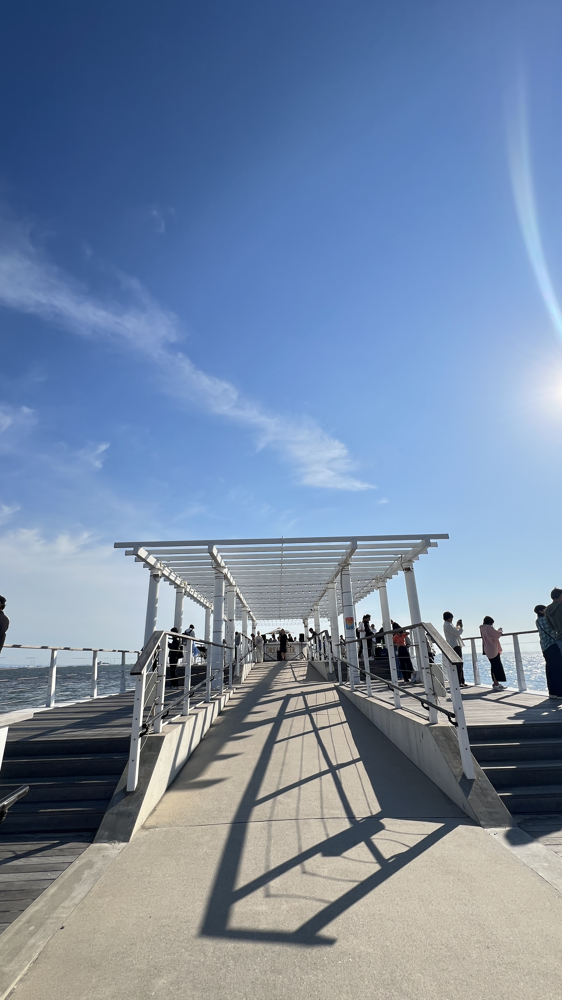
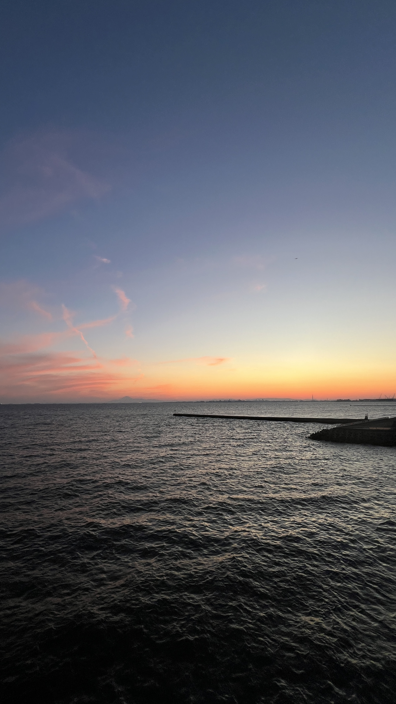

場所
千葉県千葉市稲毛区。東京湾に面した海浜エリアで、都心から約一時間。
特徴
稲毛海浜公園を中心に、約2kmの海岸線が広がる。空と海が近い場所。
アクセス
JR京葉線「稲毛海岸」下車。徒歩約20分、または自転車利用。
おすすめ
夕暮れの海辺、幕張温泉、そして寄り道のラーメン。